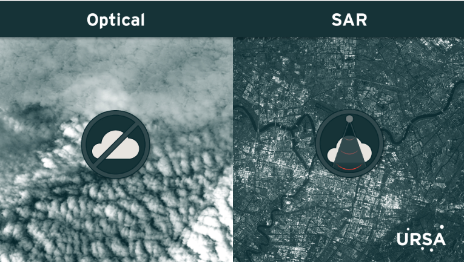

8 Synthetic Aperature Radar (SAR)
8.1 Summary
Throughout this module we have mainly focused on optical satellites and so it was important to look at SAR sensors to understand about how they work and what they can be used for more specifically.
8.1.1 SAR versus Optical
Unlike passive optical sensors that require solar reflectance to capture data, SAR uses active sensors to emit and measure microwave signals directly. Therefore SAR is not dependent on light availability so can collect data constantly, day or night, and in poor atmospheric conditions. This gives SAR a clear advantage over optical imagery as cloud cover and darkness do not affect data acquisition.

However, SAR data comes at high costs, larger data volume and greater computational complexity which limits it’s accessibility. Although Sentinel-1 is one such source of freely available SAR data.
8.1.2 How SAR works?
8.1.2.1 Amplitude or Back Scatter
The key measurement for SAR which refers to the amount of signal that is reflected back to the sensor. Just like optical sensors the signals use different wavelengths for different purposes.
8.1.2.2 Bands
C-band is the most commonly used as this is used by Sentinel-1. This has a shorter wavelength which does not fully penetrate dense vegetation so can provide a picture of tree canopies. Another common band is L-band which has a larger wavelength which penetrates deeper into canopies providing a clearer picture of ground features. Therefore when comparing SAR data we must ensure that we compare against the same bands. If both bands are available for the same time period then both can used to build a more comprehensive view of what is happening above and below the tree canopy.
8.1.2.3 Phase
How long it takes the signal to return to the sensor and specifically the point in it’s cycle at which the wave returns to the sensor. As this is related to distance traveled it is very good for identifying changes in ground level that would otherwise extremely difficult to monitor.
8.1.2.4 Radiometric Terrain Correction
As SAR data is capture off-nadir then it is susceptible to shading (areas not illuminated due to the angle of incidence) and foreshortening (features appear brighter as they are closer to the sensor). Therefore a technique called Radiometric Terrain Correction is applied to correct the images. This uses a Digital Elevation Model to represent the appropriate surface elevation and topography, then the surface reflectance values are adjusted accordingly.
8.2 Application
We have seen in the Building Spatial Applications with Big Data module that SAR can be effectively used to monitor conflict damage detection but I wanted to look at some other use cases.
The NASA SAR Handbook (Flores et al. (2019)) is an extremely comprehensive look at how SAR can be used for Forest Monitoring but how can this be related to an urban environment? Some of the techniques would need to be refined to identify areas of single tree or smaller tree canopy which are more common in cities. Li et al. (2019) investigated the different approaches to monitoring Urban Forestry but SAR was not specifically addressed. Li found many papers championing the use of airborne LiDAR and Very High Spatial Resolution (VHSR) imagery to accurately assess canopy cover. However the high cost and red tape involved in accessing this data is a major barrier to it’s use particularly in local government scenarios.
Now I spent far too long wondering why SAR isn’t used specifically for canopy calculations until I found Mastro et al. (2022) who specifically investigated the use of Sentinel-1 SAR data for change detection (including urban change) but focusing on extreme events of change. This is when it finally hit me that SAR isn’t needed for general monitoring of this! We don’t a daily, weekly or even monthly update on canopy cover. We only need a at most seasonal but more likely annual recording of this during the peak growing season.
Why? Because urban tree canopies change gradually, making frequent updates (e.g., daily, weekly, or even monthly) unnecessary. Instead, we only need seasonal or annual assessments during peak growing seasons. Since natural changes are gradual, high-temporal SAR data isn’t required so we can rely on optical data, which can be aggregated to reduce cloud cover effects.
This led me to consider other practical applications for SAR in local government. One idea was pothole monitoring—a common complaint on council social media—but the scale of potholes makes them unsuitable for SAR detection. However, subsidence monitoring presents a far more viable use case. Utilising Interferometric SAR (InSAR) to monitor ground movement changes allows for accurate monitoring (Milillo et al. (2018)). This is of utmost importance considering the tunneling through London of HS2 and Crossrail which has and could cause subsidence in these areas (Figure 8.4) leading to costly repairs and legal claims.
8.3 Reflection
It was tough to choose between Temperature or SAR topics for these week. In the end I choose SAR to round out my knowledge of both because for the group work in Building Spatial Applications with Big Data module we are focusing on temperature and specifically the Urban Heat Island effect.
In the case of SAR, I think there are many areas that can be explored, particularly complementing optical sensor data with SAR to detect changes in surface types over time.
Overall I’ve really enjoyed this module and want to push Remote Sensing use in my work environment. We have touched on so many areas where I can see benefits to create consistent and reproducible analysis to help guide decision makers. Particular areas that I would like to investigate are air quality, Urban Heat Island effect and vegetation monitoring. Once confident in my research I would want to present this to London Geospatial (a group of London Borough geospatial professionals for which I am a co-founder) as an area for knowledge growth for all London Boroughs.